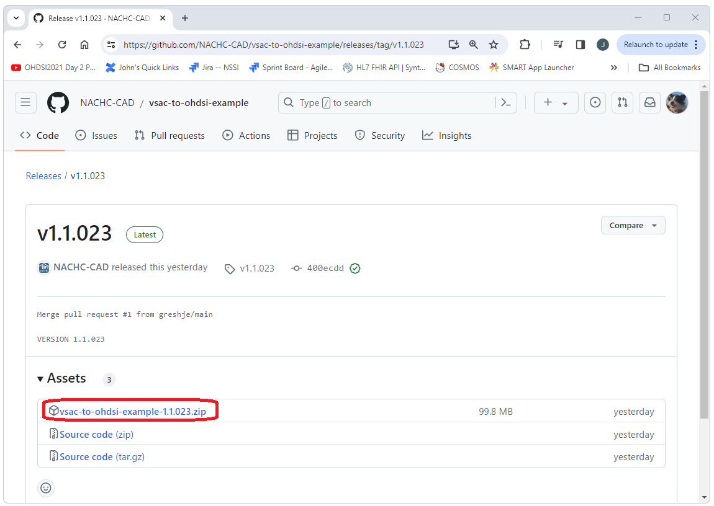
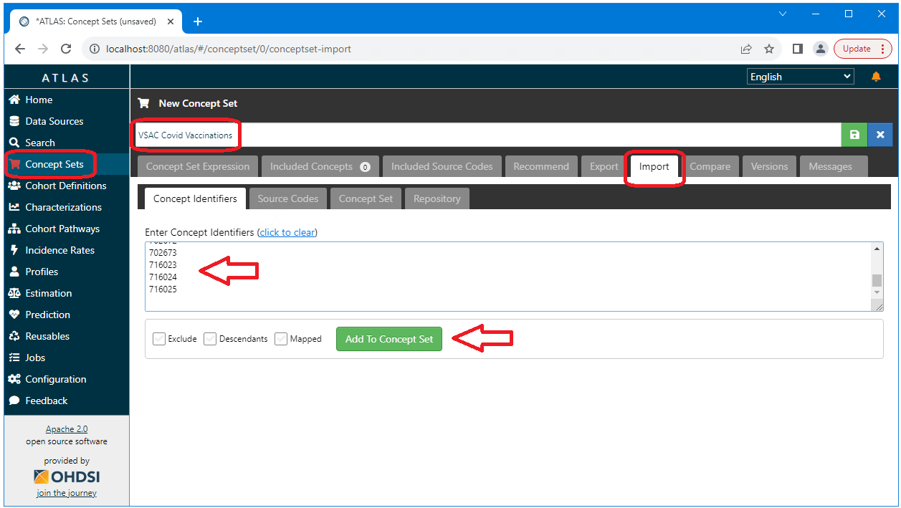
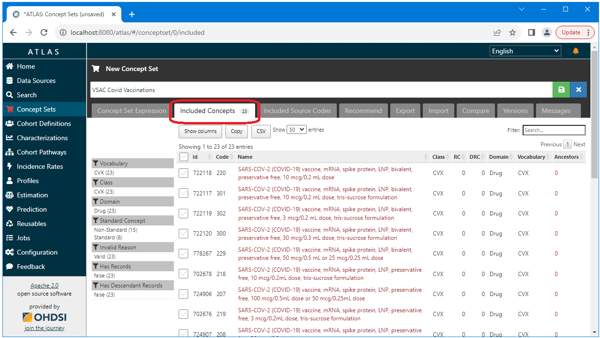

VSAC to OHDSI
VSAC to OHDSI  VSAC
to OHDSI
VSAC
to OHDSI
Quickstart
The vsac-to-ohdsi API and standalone application provide a simple and complete path to importing VSAC value sets into OHDSI. Importing VSAC value sets into OHDSI can be done in the following few short steps (detailed instructions are available on the Getting Started with VSAC-TO-OHDSI) page.
Download the application
The vsac-to-ohdsi standalone application can be downloaded from the releases page at https://github.com/NACHC-CAD/vsac-to-ohdsi-example . The download is a single zip file that includes all of the resources required to run the application. The application is installed by simply unzipping this file.

Configure the application
The application requires only four parameters to be configured: The auth.properties provided by default includes the following. If you are using Databricks you will only need to change the url and the token values.JdbcUrl=jdbc:spark://nachc-databricks.cloud.databricks.com:443/vsac_to_omop;transportMode=http;ssl=1;httpPath=sql/protocolv1/o/3956472157536757/0123-223459-leafy532;AuthMech=3;UID=token;PWD= Token=MY_SECRET_TOKEN_GOES_HERE SchemaName=vsac_to_omop DatabaseType=spark
Run the application
The application is a standalone Java application that can be run by simply executing the following.java -jar vsac-to-ohdsi.jar "./test/zip/RetrieveMultipleValueSets_2.16.840.1.113762.1.4.1235.350.txt.zip"
Import the concepts
The application will output a list of OHDSI concept_id values
corresponding the the VSAC concepts in the value set. These concept_id
values can be imported into OHDSI directly using Atlas.

Success!!!
We have now successfully imported our VSAC value set into OHDSI!

What is VSAC
What is OHDSI
The Observational Health Data Sciences and Informatics (OHDSI) is a collaborative multi-stakeholder, interdisciplinary initiative aimed at enhancing the value of observational health data through large-scale analytics. Its foundation is built on the premise of open science and shared data, utilizing the Observational Medical Outcomes Partnership (OMOP) Common Data Model (CDM) to standardize the format and content of clinical and observational research data. OHDSI’s network includes a global consortium of researchers, healthcare providers, and industry partners dedicated to improving health by empowering a community to collaboratively generate the evidence that promotes better health decisions and better care. By fostering a culture of transparency, replication, and scalability, OHDSI seeks to achieve a world in which observational research produces a comprehensive understanding of health and disease.
The benefits of using OHDSI are substantial for researchers, healthcare providers, and patients alike. For one, the standardization of health data into a common model enhances interoperability between different health systems and databases, significantly expanding the potential for cross-institutional and international research collaborations. This standardization also improves the efficiency and quality of research studies by ensuring consistency in how health data is represented and analyzed, thereby accelerating the discovery and application of new insights into patient care. Moreover, OHDSI’s commitment to open science principles ensures that research methodologies and results are transparent and reproducible, enhancing the credibility of observational research. Through its collaborative approach, OHDSI facilitates a more comprehensive understanding of diseases, treatment outcomes, and healthcare processes, ultimately contributing to more informed healthcare decisions and better patient outcomes.
What is vsac-to-ohdsi
The VSAC-TO-OHDSI project enables the import of any VSAC value set into OHDSI. This includes the mapping of VSAC system identifiers and codes to OHDSI concept_id values and the creation of OHDSI concept sets that can then be used to define OHDSI phenotypes and cohorts.
This project is public and open source under the Apache 2 license.
A standalone application that can be run from a command line is available in Github at the location shown below and vsac-to-ohdsi can be integrated into other projects using the other resources shown below-
Standalone/Example application
The standalone application for vsac-to-ohdsi can be downloaded from Github here:
https://github.com/NACHC-CAD/vsac-to-ohdsi-example
Detail instructions for downloading and running the standalone application are here:
Getting Started with vsac-to-ohdsi -
Source code for the vsac-to-ohdsi api
The vsac-to-ohdsi API souce code is available at https://github.com/NACHC-CAD/vsac-to-ohdsi -
Maven repository for the vsac-to-ohdsi api
The vsac-to-ohdsi API can be integrated into any Java project using Maven (MVN) by adding something similar to the following to the projects pom.xml file.
Refer to the Standalone/Example application for a complete pom.xml file:
https://github.com/NACHC-CAD/vsac-to-ohdsi-example
Check the Maven Central repository for the latest versions:
https://central.sonatype.com/artifact/org.nachc.cad.tools/vsactoohdsi<dependency> <groupId>org.nachc.cad.tools</groupId> <artifactId>vsactoohdsi</artifactId> <version>1.1.025</version> </dependency> -
Prerequisites
To run vsac-to-ohdsi you will need Java. The vsac-to-ohdsi API has been tested using both Java 1.8 and Java 11.0. The only other prerequisite is connectivity to an instance of the OHDSI CDM that includes populated vocabulary tables.